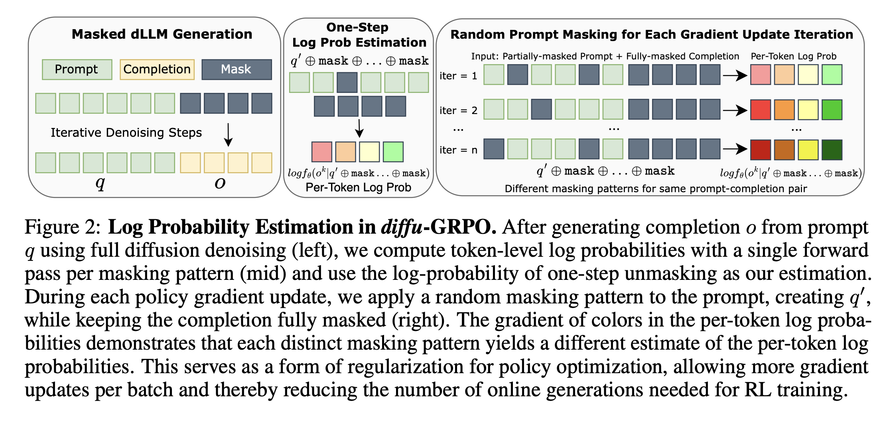
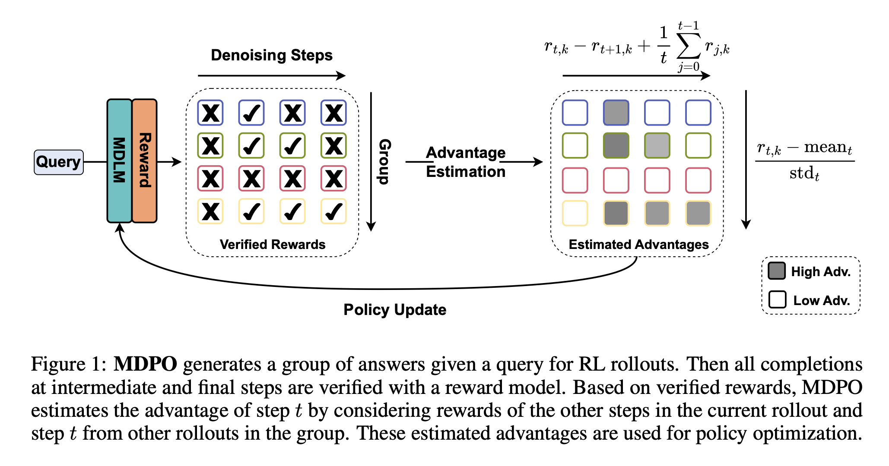
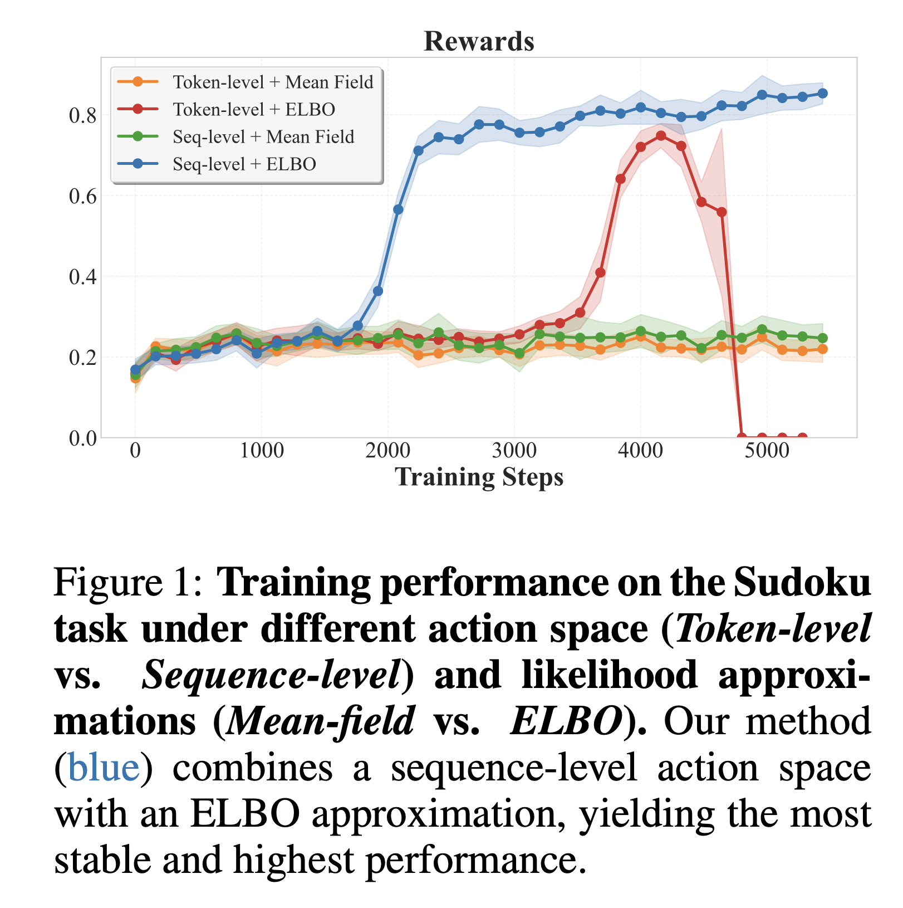
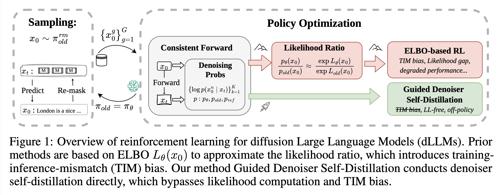
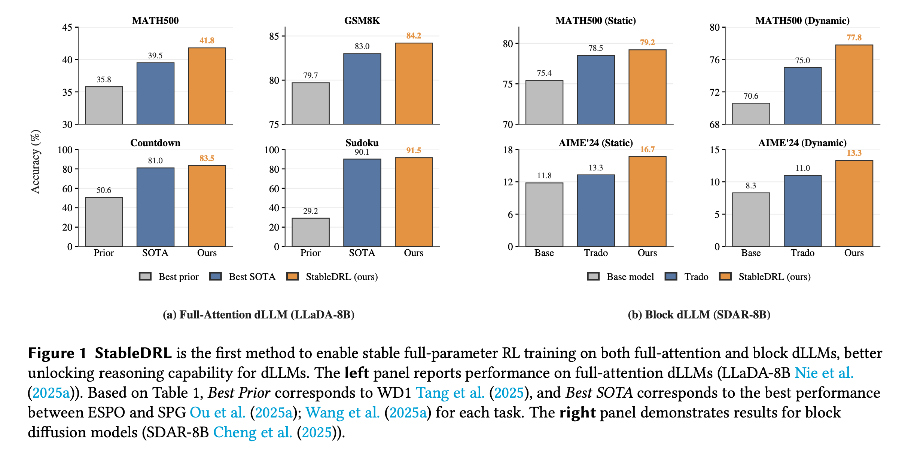
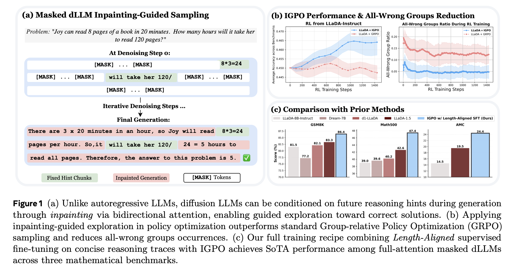

TL;DR. The hard part of applying RL to a diffusion language model is not choosing a reward. It is deciding what the policy is when generation happens through many non-causal denoising steps. Most recent methods can be understood by how they answer that question—and by how they cope with the noisy likelihood estimates that follow.
Autoregressive language models generate a response one token at a time. This makes reinforcement learning unusually convenient: every generated token comes with a conditional probability, and the probability of the whole response is simply their product.
Diffusion language models (dLLMs) break this interface.
A masked diffusion language model begins with a canvas of mask tokens and repeatedly fills, revises, or remasks positions. Many tokens may be predicted in parallel. The reveal order can depend on confidence. A token near the end may be filled before one near the beginning. The model has a denoiser, but it does not expose the same left-to-right sequence likelihood that PPO, GRPO, and most language-model RL algorithms assume.
This leads to a surprisingly deep question:
If a model generates text through iterative denoising, what exactly is the policy that reinforcement learning should optimize?
The answer might be a token prediction, a denoising transition, a block of tokens, the full trajectory, or the final sequence. Each choice produces a different algorithm and a different failure mode.
I found the growing collection of names—d1, MDPO, ESPO, StableDRL, RSPO, GDSD—hard to compare until I stopped organizing them by acronym and started asking a simpler question: which part of the RL interface is each method trying to repair? That is the route I will take here, beginning with the sampler and building up to the objectives.

Contents
Masked diffusion language modeling in one page
Let \(y_0 = (y_0^1, \dots, y_0^L)\) be a clean response of length \(L\), and let \(m\) be a special mask token. A simple forward process replaces each clean token by \(m\) with a time-dependent probability:
At high noise, most positions are masks. At low noise, most positions are clean. The neural network learns a denoiser
where \(x\) is the prompt and \(y_t\) is a partially masked response.
At inference time, the model starts from an all-mask canvas and repeatedly:
- predicts distributions for masked positions;
- selects token values;
- chooses which predictions to reveal;
- optionally remasks low-confidence predictions;
- stops when the response is complete.
The last three items matter. They turn a denoiser into a sampler. Two systems using the same neural network can define different output distributions if they use different reveal schedules, confidence rules, block sizes, temperatures, or remasking strategies.
I will use a deliberately tiny example throughout the post. Imagine that the desired response is The answer is 5, and pretend for the moment that the tokenizer gives us four neat pieces:
Running example.
The answer is 5
[MASK] [MASK] [MASK] [MASK]
[MASK] [MASK] [MASK] 5
The [MASK] is 5
The answer is 5The exact order is not important. What matters is that the final token can appear first and then influence earlier positions. There is no unique left-to-right history to attach to each token. Keep this little trajectory in mind; it makes the competing definitions of policy much less abstract.
It is useful to distinguish three distributions:
| Object | Role | Typical source |
|---|---|---|
| Forward corruption | Creates noisy training states | Random independent masking |
| Reverse model | Predicts clean tokens from a noisy state | The learned denoiser |
| Deployed sampler | Produces final responses | Confidence selection, blocks, remasking, editing |
Many RL objectives are evaluated using the first distribution, while rewards come from samples produced by the third. That gap is the source of much of the field’s confusion.
Why ordinary language-model RL works
For an autoregressive model,
so
This gives an exact log probability for every sampled token. If a rollout was generated by an older policy \(\pi_{\text{old}}\), PPO-style methods can form the importance ratio
GRPO avoids learning a critic by sampling a group of \(G\) responses for each prompt and normalizing rewards inside the group:
A simplified clipped objective is
There are many details—KL penalties, token averaging, sequence normalization—but the key point is simple: the policy ratio is tractable because generation and probability evaluation share the same causal factorization.
The missing likelihood problem
A dLLM generates through a latent trajectory
The probability of the final response is obtained by summing over all trajectories that could produce it:
The product inside the sum is easy to write down. The sum is the problem. Many different reveal orders and intermediate fillings may lead to the same completed sequence.
This creates three distinct estimation problems:
1. Marginal sequence likelihood
What is the probability of the final text after integrating out every denoising path? This is what a sequence-level importance ratio ideally needs, and it is generally intractable.
2. Trajectory likelihood
What is the probability of the particular reverse path that was sampled? This can be tractable if every stochastic decision is recorded, but it makes the trajectory—not just the response—the policy action.
3. Denoising score
How well does the model reconstruct the response from randomly masked states? This resembles pretraining and is cheap to estimate, but it is not automatically the likelihood of either the sampled trajectory or the final response.
These quantities correlate, but they are not interchangeable.
Four ways to define the policy
Before comparing named algorithms, I find it more useful to ask what each one treats as an action. In the running example, are we optimizing the token 5, one arrow between masked states, a chunk such as The answer, or the completed sentence?
Token as action
The first family constructs an approximate log probability for individual output positions. d1 introduced diffu-GRPO, which samples a completed response, masks subsets of it, and uses denoiser probabilities as token-level training signals. MaskGRPO develops a more systematic estimator for multimodal discrete diffusion.
This approach is attractive because it looks like ordinary LLM RL and reuses the masked-denoising objective. It is also biased: a dLLM output token is not generated under a unique causal prefix, and randomly masked contexts differ from confidence-selected rollout states.
In our toy trajectory, this view tries to assign a useful score to predicting 5 even though 5 may have been sampled before the phrase The answer is. Re-masking creates contexts in which that token can be evaluated, but those contexts need not be the ones the sampler actually visited.
Denoising transition as action
Trajectory methods treat
as an action in a Markov decision process.
MDPO explicitly trains on progressive refinement states that resemble inference. CJ-GRPO emphasizes consistency between the trajectory used for rollout and the one used for optimization. A later continuous-time treatment models discrete diffusion as a controlled continuous-time Markov chain and derives corresponding PPO and GRPO objectives.
The trajectory probability factorizes:
This is conceptually clean. It is also expensive. Long trajectories require many model evaluations, and two paths ending in the same answer can have very different probabilities.
Here, each arrow in the four-line example is an action. If another rollout reveals The before 5, it is a different trajectory even when both runs finish with exactly the same sentence.

Block as action
Block-diffusion models generate a response in chunks. They sit between fully non-autoregressive diffusion and tokenwise autoregression. DiRL/DiPO combines blockwise training and optimized inference with an RL objective. LLaDA2.1 introduces ELBO-based block-level policy optimization, or EBPO, in a larger system that also allows token-to-token editing.
Block-level optimization is often the best systems compromise: it respects the architecture and can reuse caches, while avoiding a single ratio for a very long sequence. But the block boundaries themselves become part of the policy design.
For the toy response, we might treat The answer and is 5 as two actions. That is easier to manage than every denoising step, but it immediately raises a new question: who chose those block boundaries?
Entire response as action

ESPO argues that forcing dLLMs into token-level RL is conceptually wrong. A full-attention dLLM defines a joint distribution over the response, so the response should be the action.
Because the exact sequence likelihood is unavailable, ESPO uses an evidence lower bound (ELBO):
The raw difference between two sequence ELBOs grows with length. ESPO normalizes it:
This has an elegant interpretation: one response, one advantage, one ratio. The cost is coarse credit assignment. Every token inherits the same outcome advantage.
In the running example, the whole string The answer is 5 is one action. This matches a reward such as mathematical correctness rather nicely, but it no longer tells us whether the decisive choice was 5, the surrounding phrase, or an earlier refinement.
GDPO shares the sequence-ELBO perspective but focuses on estimator variance, using semi-deterministic Monte Carlo integration to reduce noise.
A field guide to the acronyms
The acronym list looks intimidating, but most methods are responses to a small number of recurring bottlenecks. This is the cheat sheet I wish I had when I started reading the papers:
| Bottleneck | Representative methods | Main idea | Main risk |
|---|---|---|---|
| Cheap policy score | d1 / diffu-GRPO, MaskGRPO | Re-mask completed responses and score tokens | Biased policy ratio |
| Sampler mismatch | MDPO, CJ-GRPO | Optimize actual or consistent denoising trajectories | High rollout and memory cost |
| Sequence likelihood | GDPO, ESPO | Use ELBO as a response-level likelihood surrogate | ELBO gap and noisy exponentiation |
| Blockwise scaling | DiRL/DiPO, EBPO | Match optimization unit to block architecture | Architecture-specific objective |
| Process credit | SAPO, DiSPO | Reward or branch at intermediate states | Extra evaluator or counterfactual sampling |
| Exploration | IGPO | Insert partial hints through inpainting | Uses privileged traces |
| Ratio instability | StableDRL | Unconditional clipping and self-normalization | More conservative updates |
| Noisy score calibration | RSPO | Use reward advantage as target relative score | Reward-to-score calibration choice |
| Avoid policy ratios | DMPO, GDSD | Distribution matching or guided self-distillation | Depends on teacher/state distribution |
| Preference alignment | ELBO-KTO | Put an ELBO surrogate inside KTO | ELBO plus judge uncertainty |
ELBO is useful, but it is not a likelihood ratio
The ELBO is
It lower-bounds \(\log \pi_\theta(y_0\mid x)\). But if
then
is not necessarily a lower or upper bound on
The two ELBO gaps may differ. More Monte Carlo samples reduce stochastic variance, but they do not remove this variational bias. That is the part worth remembering: once we exponentiate the score difference, even a modest mismatch can turn into a badly distorted importance ratio.
Distribution matching instead of policy gradients
Under a KL-regularized reward objective, the ideal policy often has the form
DMPO learns toward a reward-tilted target distribution using weighted cross-entropy, avoiding the standard clipped-ratio construction.
GDSD goes further. It derives an advantage-guided teacher from the optimum of reverse-KL-regularized RL and directly distills denoiser logits. In effect, RL becomes supervised learning against a self-generated, reward-guided target.
This is a major shift in viewpoint:
Instead of estimating the missing sequence likelihood more accurately, can we formulate the update so that sequence likelihood is unnecessary?
The catch is that likelihood-free does not mean assumption-free. One still chooses which masked states to train on, how rewards modify the teacher, and which divergence the student minimizes.

Why training collapses
Approximate ratios do more than add noise to the gradient. They interact badly with clipping and policy drift.
Let an estimated log-ratio be
where \(\eta\) is estimator noise. The importance ratio is
Even symmetric noise in log space becomes heavy-tailed after exponentiation. A rare positive error can create a huge multiplier.
StableDRL identifies a feedback loop:
- estimated ratios have long-tailed noise;
- outliers cause gradient spikes;
- the policy drifts away from the rollout policy;
- larger drift increases the variance of future ratio estimates;
- the cycle repeats until reward collapses.
Standard PPO clipping is conditional on the sign of the advantage and the direction of the ratio. With model-independent estimation noise, some dangerous outliers can bypass the intended trust region. StableDRL uses:
- unconditional clipping, which bounds ratios regardless of advantage sign;
- self-normalization, which prevents group-level gradient magnitude from fluctuating with the number and size of valid samples.

What I take from StableDRL is that “stability” is not one mechanism. Different fixes control different parts of the failure loop:
| Technique | What it controls | What it does not fix |
|---|---|---|
| Length normalization | Ratio scale across response lengths | ELBO bias |
| Monte Carlo variance reduction | Stochastic estimator noise | Training–inference mismatch |
| Clipping | Outlier influence | Sparse exploration |
| Self-normalization | Aggregate gradient scale | Wrong credit granularity |
| KL penalty | Drift from a reference | A noisy KL estimator |
| Reward calibration | Trust in model-side scores | Poor state coverage |
Exploration and credit assignment
A perfect policy ratio is useless if every rollout gets the same reward.
The all-wrong group problem
Suppose a difficult problem produces rewards
Then every group-relative advantage is zero. No gradient estimator can recover a direction from absent reward variation.
IGPO exploits a capability specific to masked diffusion: inpainting. The model can condition on a correct reasoning chunk that appears later in the response and generate text around it. Rather than revealing a full solution, IGPO inserts partial ground-truth hints and asks the model to complete the rest. This moves rollouts into promising regions while preserving some self-generated reasoning.

There is an important caveat here: IGPO gets to see partial solution traces during exploration. I would not compare it with outcome-only RL as though both methods were given exactly the same information.
Intermediate states as credit checkpoints
Terminal correctness gives one scalar to an entire refinement process. Two methods add finer credit in different ways:
- SAPO introduces process-based rewards intended to measure incremental reasoning progress.
- DiSPO branches from cached intermediate masked states, samples alternate fillings, scores the resulting completions, and updates newly filled tokens.
The distinction is important. SAPO needs a process evaluator. DiSPO needs counterfactual completions. One risks evaluator bias; the other risks mismatch between the branch distribution and the deployed sampler.
A compact training loop
The following pseudocode separates rollout, reward, policy scoring, and optimization. Different methods replace policy_score and augment_rollouts.
for prompt_batch in dataset:
# 1. Generate through the deployed diffusion sampler.
trajectories, completions = rollout(
policy,
prompt_batch,
num_samples=group_size,
record_states=True,
)
# 2. Optionally repair exploration failures.
completions, trajectories = augment_rollouts(
completions,
trajectories,
strategy="none | inpainting | state_branching",
)
# 3. Compute terminal or process rewards.
rewards = verifier(prompt_batch, completions)
advantages = group_normalize(rewards)
# 4. Define what the policy means.
scores = policy_score(
policy,
completions,
trajectories,
estimator="mean_field | trajectory | elbo | calibrated",
granularity="token | transition | block | sequence",
)
# 5. Apply a stable update or distill a guided teacher.
loss = objective(
scores=scores,
advantages=advantages,
clipping="conditional | unconditional",
normalization="group_size | self_normalized",
)
loss.backward()
optimizer.step()I find this decomposition much more useful than memorizing algorithm names. It also shows why several papers are complementary rather than direct competitors: IGPO changes exploration, ESPO changes policy granularity and scoring, and StableDRL changes the optimizer’s response to noisy scores. In principle, all three ideas could live in the same training stack.
What I think the experiments tell us
So, what have the experiments actually established? The clearest result is that RL can improve masked-dLLM reasoning. d1 established feasibility, and later work reports gains across math, coding, symbolic reasoning, and planning.
What I do not think we know yet is which objective wins when everything else is held fixed.
Why clean comparisons are hard
The papers change many things at once:
- LLaDA-8B vs. Dream-7B vs. block-diffusion models;
- base vs. instruction-tuned vs. specially supervised checkpoints;
- fixed-length vs. different response canvases;
- full diffusion vs. blockwise or skipped-step decoding;
- confidence reveal vs. remasking or token editing;
- group size and number of policy updates per rollout batch;
- number of Monte Carlo masks used for likelihood estimation;
- terminal, process, hinted, or preference rewards;
- total denoiser calls and hardware.
A method can appear more sample-efficient in gradient steps while using more forward passes per step. A faster sampler can improve online RL by reducing policy staleness, even if the objective is unchanged. A better SFT checkpoint can nearly eliminate all-wrong groups and make the RL algorithm look more robust.
What different benchmarks measure
| Benchmark family | Strength | Blind spot |
|---|---|---|
| GSM8K | Easy exact verification | Contamination and answer-format sensitivity |
| MATH500 / AMC | Harder multi-step mathematics | Final answer does not validate reasoning |
| Countdown / Sudoku | Clean symbolic rewards; useful for exploration studies | Synthetic structure may favor search tricks |
| HumanEval-style code | Executable correctness | Sandbox, pass@\(k\), and prompt differences |
| Planning environments | Global coherence and long-horizon structure | Environment version and success criteria vary |
The comparison I would most like to see keeps the checkpoint, rollout sampler, response length, reward, prompts, and total number of denoiser evaluations fixed. Until then, I treat claims of universal superiority cautiously.
Numbers I wish every paper reported
Final accuracy and reward curves tell only part of the story. When I read one of these papers, I also want to know:
- quantiles and histograms of estimated log-ratios;
- clipping and saturation rates;
- gradient norm and spike frequency;
- estimated and realized KL drift;
- all-wrong and all-correct group fractions;
- response length and entropy;
- denoiser calls for rollout and likelihood evaluation;
- peak memory and wall-clock time;
- multiple seeds and confidence intervals;
- broad capability regression tests.
How I would choose a method
There is no universally dominant optimizer yet. A practical decision tree is more useful.
Start with the deployment sampler
If the model will use a fixed stochastic denoising trajectory and you can record every transition, a trajectory method such as MDPO gives the closest training–inference match.
If the architecture generates in blocks, a block-level objective such as EBPO or the DiRL stack is a more natural systems fit.
If the model uses full-attention any-order generation and rewards apply to the complete response, ESPO or GDPO provides a cleaner sequence-level abstraction than tokenwise GRPO.
Diagnose the actual bottleneck
- Mostly all-wrong groups? Improve initialization, curriculum, group size, inpainting, or state branching.
- Exploding ratios or reward collapse? Add StableDRL-style unconditional clipping and self-normalization.
- ELBO evaluation too noisy? Use GDPO-style variance reduction.
- ELBO mismatch seems fundamental? Try DMPO or GDSD.
- Reliable verifier but noisy policy score? RSPO’s calibration view is attractive.
- Only binary unpaired preference labels? ELBO-KTO directly targets that regime.
Do not mix up three kinds of efficiency
- Statistical efficiency: reward improvement per rollout.
- Optimization efficiency: reward improvement per gradient step.
- Systems efficiency: reward improvement per GPU-hour.
A method can win one and lose the others.
Open problems
The papers already suggest plenty of next steps. The following are the questions I would be most excited to see answered.
1. A controlled likelihood-estimator benchmark
A useful first experiment would be to shrink the MDLM until completion probabilities can be enumerated almost exactly, or at least estimated to high precision. We could then measure the bias and variance of mean-field, ELBO, trajectory, and calibrated-score estimators before jumping to 8B models.
2. The reveal schedule should be part of the policy
Confidence selection decides which tokens become context for future predictions. It is an action, not an implementation detail. A complete formulation may need a hierarchical policy:
Learning reveal and remasking decisions could improve reasoning and allocate compute adaptively, but it makes credit assignment harder.
3. Variable-length generation
Many experiments use a fixed response canvas and special EOS handling. A robust dLLM policy should model insertion, deletion, stopping, or editable length. Otherwise performance can depend on choosing a favorable canvas size.
4. Safe off-policy reuse
Diffusion rollouts are expensive. Replay buffers would help, but off-policy correction is precisely where approximate ratios are least trustworthy. Conservative sequence objectives or guided distillation may be safer than ordinary importance sampling.
5. Calibration across noise levels
Confidence drives reveal order, remasking, and entropy filtering, but denoiser probabilities may not be calibrated across \(t\). A score of \(0.9\) at a nearly all-mask state need not mean the same thing as \(0.9\) near completion.
6. Beyond exact verifiers
Most progress so far is on math, code, and planning, where answers are relatively easy to verify. Human preferences are noisy, plural, and sometimes contradictory. I am especially curious how these methods behave on helpfulness, harmlessness, factuality, multilingual generation, long-context editing, refusals, and uncertain reward models.
7. Capability retention
Optimizing a narrow verifier may reduce diversity or unrelated abilities. Whenever a verifier score goes up, I would also check what happened to the model’s broader capabilities and measure policy drift using more than an approximate KL.
Closing thoughts
RL for diffusion language models began with a pragmatic question: can the GRPO recipe that works for autoregressive reasoning models be adapted to masked generation?
The answer is yes—but the adaptation exposes a more fundamental modeling problem. In a dLLM, the neural denoiser, the denoising path, and the final text distribution are different objects. A training objective can be well aligned with pretraining while poorly aligned with inference. A sequence-level objective can have the right semantics while using a biased score. An exact trajectory ratio can optimize the wrong path-level notion of behavior. A stable optimizer cannot compensate for groups with no reward variation.
After reading this line of work, the decomposition I keep coming back to is:
My guess is that the strongest future methods will be combinations rather than one more isolated acronym: sampler-aware trajectories or blocks, explicit exploration, calibrated or likelihood-free updates, and stability controls designed for estimated scores.
The key question is no longer whether reinforcement learning works for dLLMs. It is whether we can define the policy in a way that matches how the model actually generates—and optimize it without giving up the parallelism and flexible generation order that made diffusion language models interesting in the first place.
References
- Bie, T. et al. (2026). LLaDA2.1: Speeding Up Text Diffusion via Token Editing. arXiv:2602.08676
- Deshpande, D. (2026). Masked Diffusion Language Models are Strong and Steerable Text-Based World Models for Agentic RL. arXiv:2607.16204
- Gu, Y. et al. (2025). Masked Auto-Regressive Variational Acceleration: Fast Inference Makes Practical Reinforcement Learning. arXiv:2511.15190
- He, H., Renz, K., Cao, Y., & Geiger, A. (2025). MDPO: Overcoming the Training-Inference Divide of Masked Diffusion Language Models. arXiv:2508.13148
- Jindal, V. et al. (2025). Aligning Diffusion Language Models via Unpaired Preference Optimization. arXiv:2510.23658
- Ma, T. et al. (2025). Consolidating Reinforcement Learning for Multimodal Discrete Diffusion Models. arXiv:2510.02880
- Oba, D., Furuta, H., & Okazaki, N. (2026). Diffusion-State Policy Optimization for Masked Diffusion Language Models. arXiv:2602.06462
- Ou, J. et al. (2025). Principled RL for Diffusion LLMs Emerges from a Sequence-Level Perspective. arXiv:2512.03759
- Rojas, K. et al. (2025). Improving Reasoning for Diffusion Language Models via Group Diffusion Policy Optimization. arXiv:2510.08554
- Tang, X. et al. (2026). GDSD: Reinforcement Learning as Guided Denoiser Self-Distillation for Diffusion Language Models. arXiv:2605.29398
- Xie, S. et al. (2025). Step-Aware Policy Optimization for Reasoning in Diffusion Large Language Models. arXiv:2510.01544
- Yang, J. et al. (2025). Taming Masked Diffusion Language Models via Consistency Trajectory Reinforcement Learning with Fewer Decoding Step. arXiv:2509.23924
- Yu, Z. et al. (2026). Relative Score Policy Optimization for Diffusion Language Models. arXiv:2605.10218
- Zhang, Z., Sheng, J., Yao, D. D., & Tang, W. (2026). A Continuous-Time Reinforcement Learning Framework for Fine-Tuning Discrete Diffusion Models. arXiv:2607.14522
- Zhao, S., Gupta, D., Zheng, Q., & Grover, A. (2025). d1: Scaling Reasoning in Diffusion Large Language Models via Reinforcement Learning. arXiv:2504.12216
- Zhao, S. et al. (2025). Inpainting-Guided Policy Optimization for Diffusion Large Language Models. arXiv:2509.10396
- Zhong, J. et al. (2026). Stabilizing Reinforcement Learning for Diffusion Language Models. arXiv:2603.06743
- Zhu, Y. et al. (2025). DiRL: An Efficient Post-Training Framework for Diffusion Language Models. arXiv:2512.22234
- Zhu, Y. et al. (2025). Enhancing Reasoning for Diffusion LLMs via Distribution Matching Policy Optimization. arXiv:2510.08233